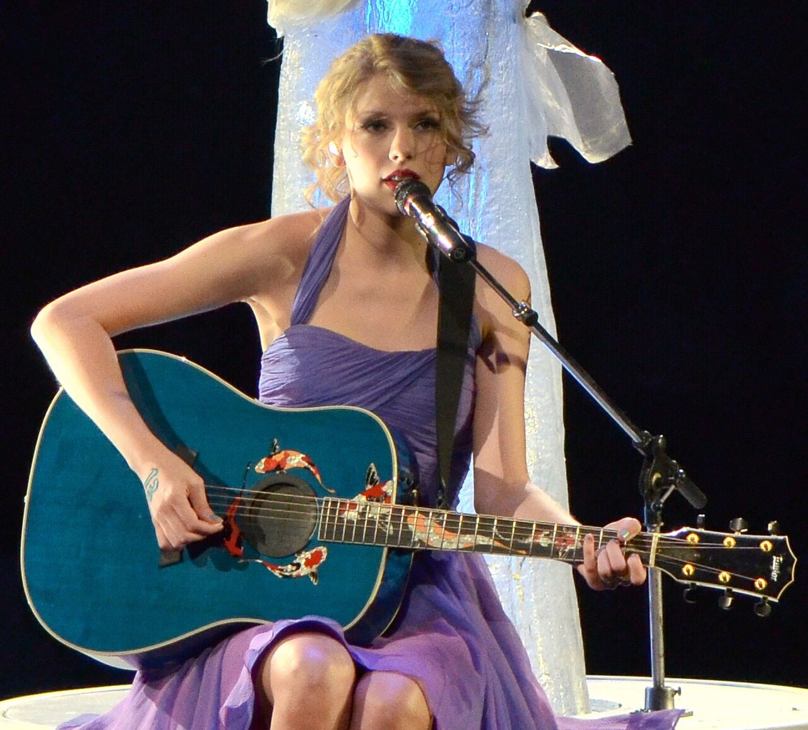

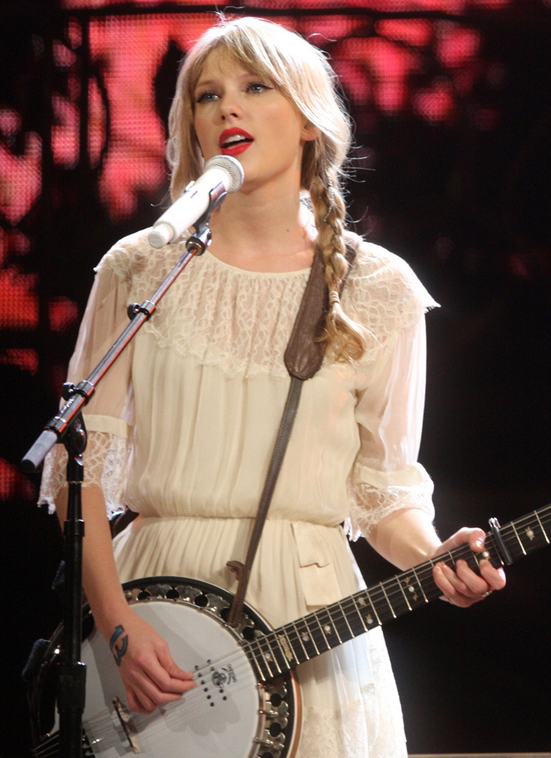
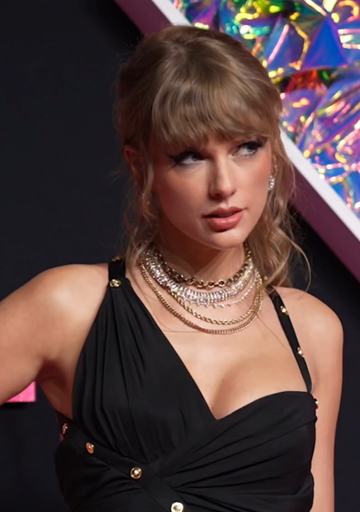
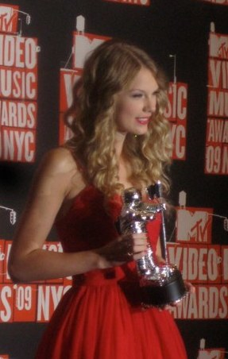
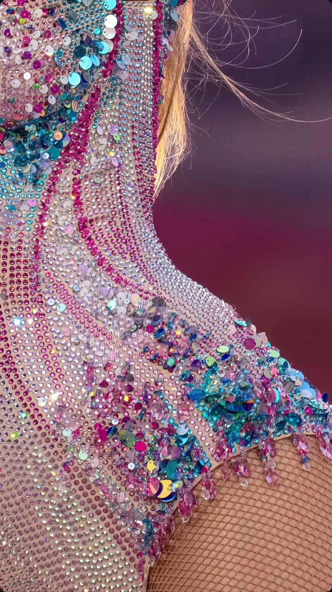
She arrived as a country teenager with a notebook full of stories. She leaves — or doesn't — as the most commercially powerful force in the history of the music industry. This is the story of how that happened, and why it keeps happening.




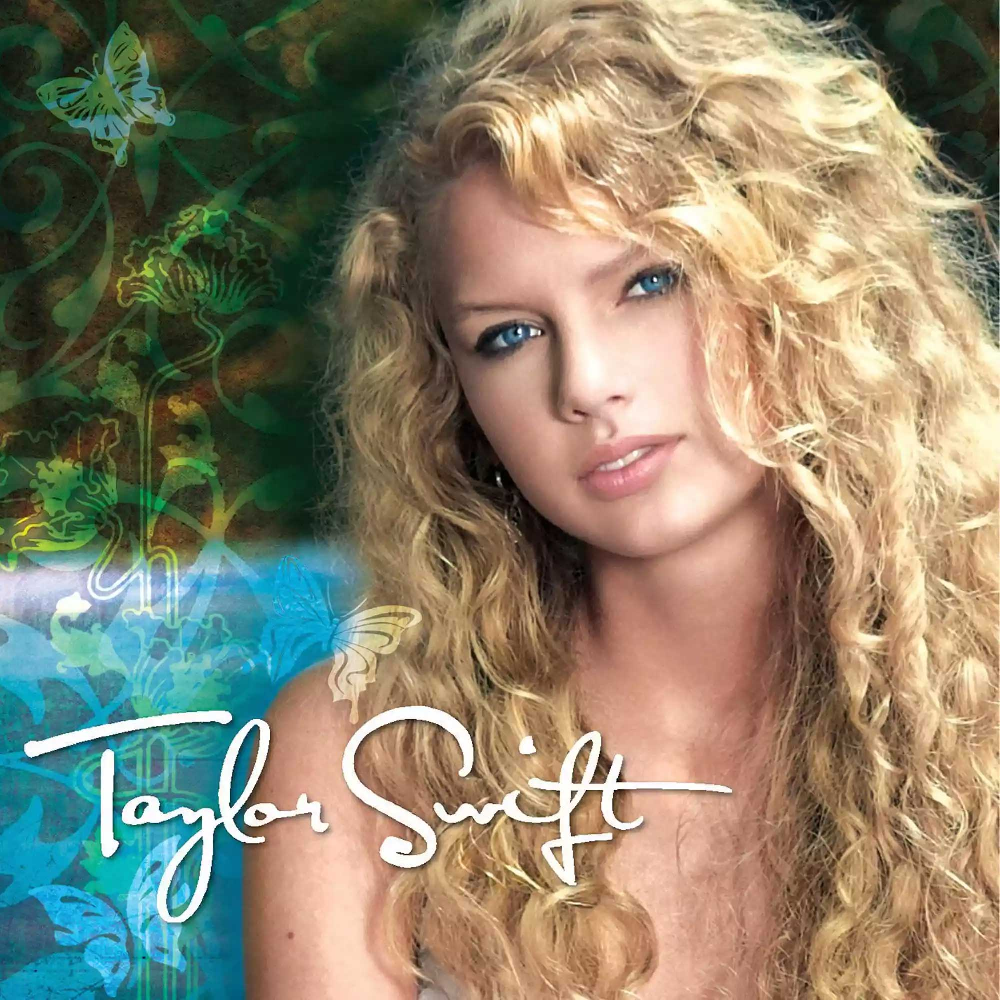
A thirteen-year-old from Pennsylvania decides she's going to be a country star. Not a pop star. Not a celebrity. A songwriter. She moves to Nashville alone, cold-calls labels, and lands a deal at DreamWorks. The origin story is almost implausibly clean — but what follows is not.
Taylor Swift is 16. The debut album she wrote almost entirely alone goes platinum and produces Tim McGraw — a song about a boy written before she'd even broken up with him. Country radio resists. Then folds.
Love Story and You Belong With Me cross from country radio to Top 40 without anyone's permission. Fearless wins Album of the Year at the Grammys. She is the youngest artist ever to win. She will not be finished with that award.
Kanye West takes her microphone mid-acceptance speech. She is 19. The moment will follow both of them for a decade — weaponized, litigated, re-litigated. She files it away. She is already taking notes.
All 14 tracks written without co-writers — a direct answer to critics who said she needed help. The critical consensus shifts: maybe this isn't a marketing project. Maybe it never was.
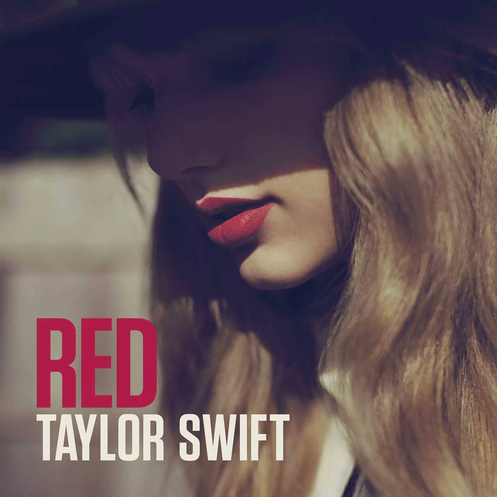
Red is the hinge album — half country, half pop, all chaos. It's messy and emotional and too long and contains All Too Well, which is quietly one of the greatest breakup songs ever written. Nobody knows this yet. They will.
Red sells 1.21 million copies its first week — the highest total in a decade. It is neither country nor pop. The CMA calls it country. The Grammys disagree. The listeners don't care.
Swift removes her music from Spotify, citing unfair compensation. The industry calls it a stunt. Three years later, Spotify changes its policies. She was right about this, as she is right about most things, eventually.
Red (Taylor's Version) drops with the 10-minute All Too Well. It debuts at #1 on the Hot 100 — the longest song ever to do so. What was a beloved deep cut becomes a monument.
Swift directs a 15-minute short film for All Too Well starring Sadie Sink and Dylan O'Brien. It wins an MTV VMA for Best Direction. She is now, without announcement, a filmmaker.
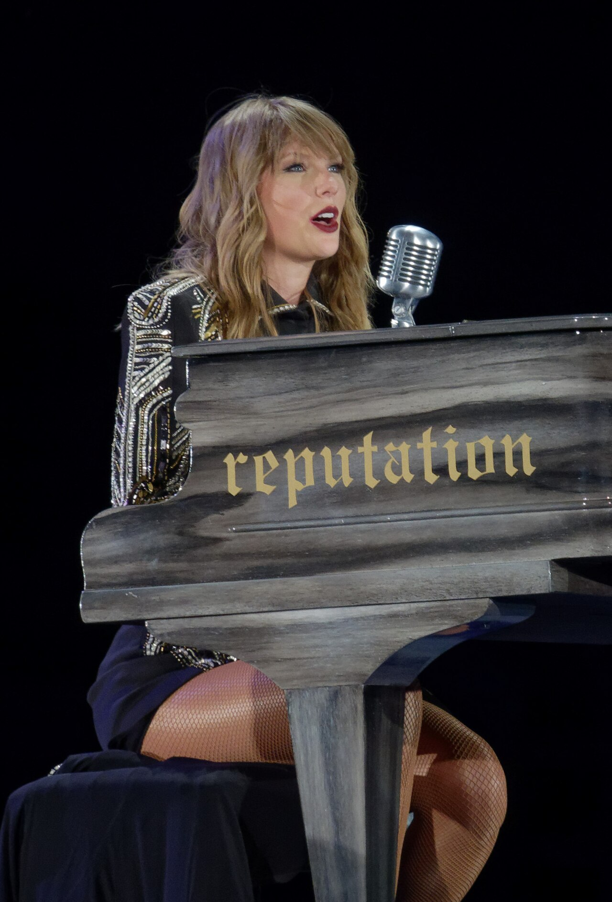
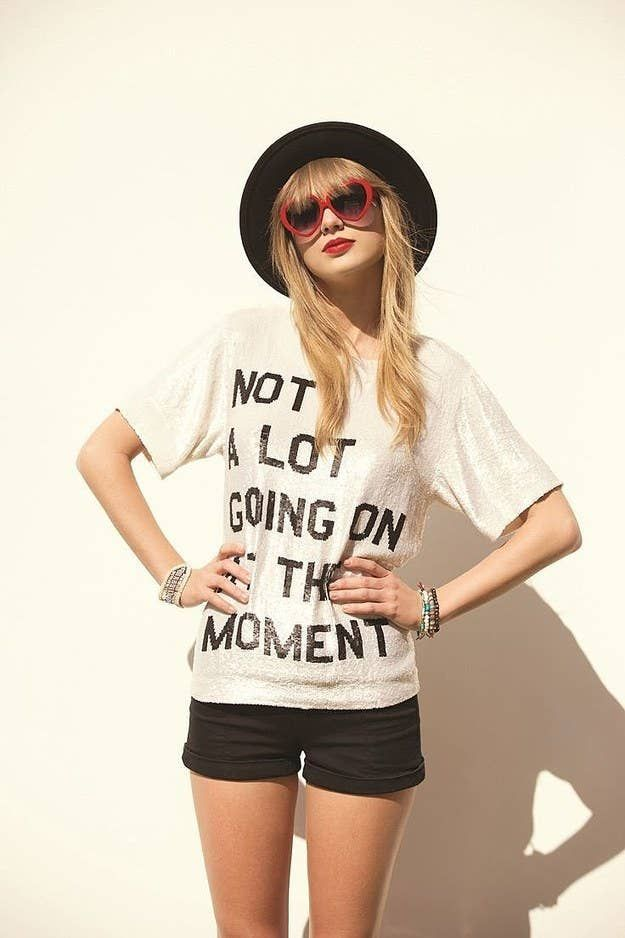
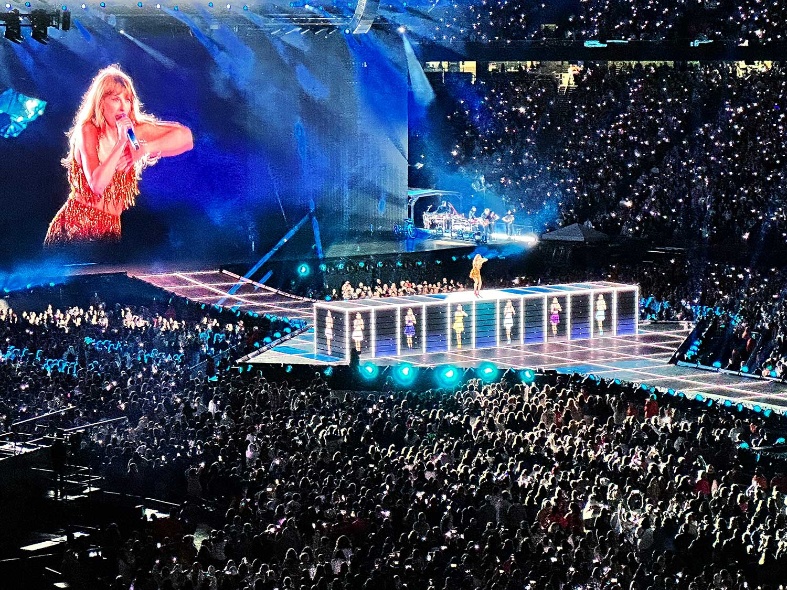
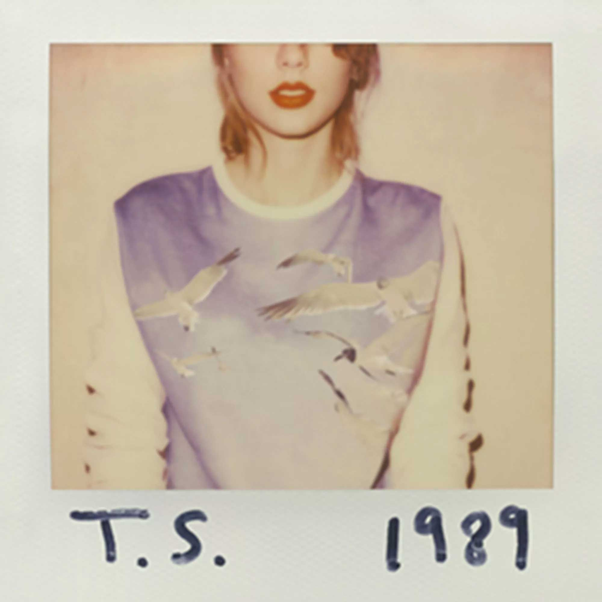
The clean-break album. Pure synth-pop, Max Martin production, not a banjo in sight. It wins Album of the Year — making Swift the first woman to win the award twice. For a moment, she is the center of everything. Then the internet decides otherwise.
Shake It Off, Blank Space, Bad Blood, Style — the singles arrive like a conquest. 1989 sells 1.287 million copies its first week. She crossed cleanly from country to pop without losing either audience. Nobody else had done that.
Swift publishes an open letter refusing to license 1989 during Apple Music's free trial. Artists would receive nothing. Apple reverses its policy within 24 hours. She is not just an artist — she is now a negotiating position.
The Kim Kardashian phone call leak. "Taylor Swift is over party" trends globally. She disappears entirely — no interviews, no social media, nothing. For a full year. She is taking notes about what it feels like to be buried alive by the internet.
1989 wins Album of the Year. In her acceptance speech, Swift addresses the room — and Kanye West — directly: someone will always try to take credit for your accomplishments. The industry understands exactly who she means.
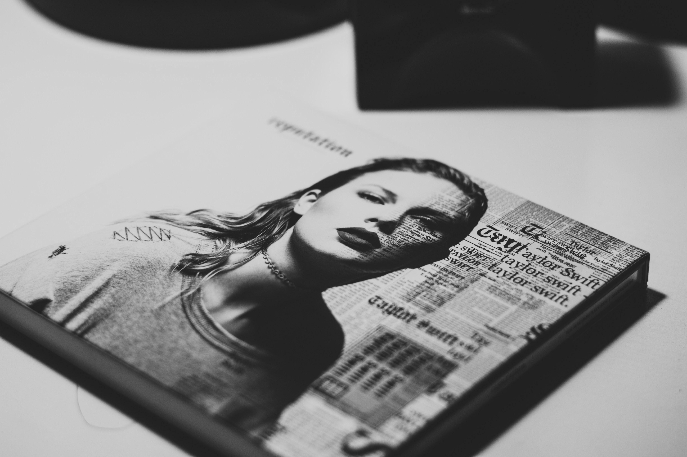
She returns from silence as something different. reputation doesn't apologize. It weaponizes the media narrative that tried to destroy her — wearing snakes as jewelry, making the tabloid villain persona the artistic concept. The most controlled album she'll ever make.
After a year of silence, she wipes all social media and drops Look What You Made Me Do. reputation sells 1.05 million copies in its first week. The snake imagery is now her aesthetic. She recontextualized the attack.
Scooter Braun's company acquires Big Machine Records and with it, the masters to her first six albums — without her knowledge. She finds out when it's announced publicly. The dispute will define the next five years of her career.
345 million dollars. The highest-grossing North American tour in history at the time. She plays to 2.9 million people across 53 shows. Nobody is calling her over anymore.
After years of deliberate silence, Swift endorses two Tennessee Democratic candidates. Voter registration in Tennessee spikes 65,000 in a single day. She was right to wait, and right about the timing.
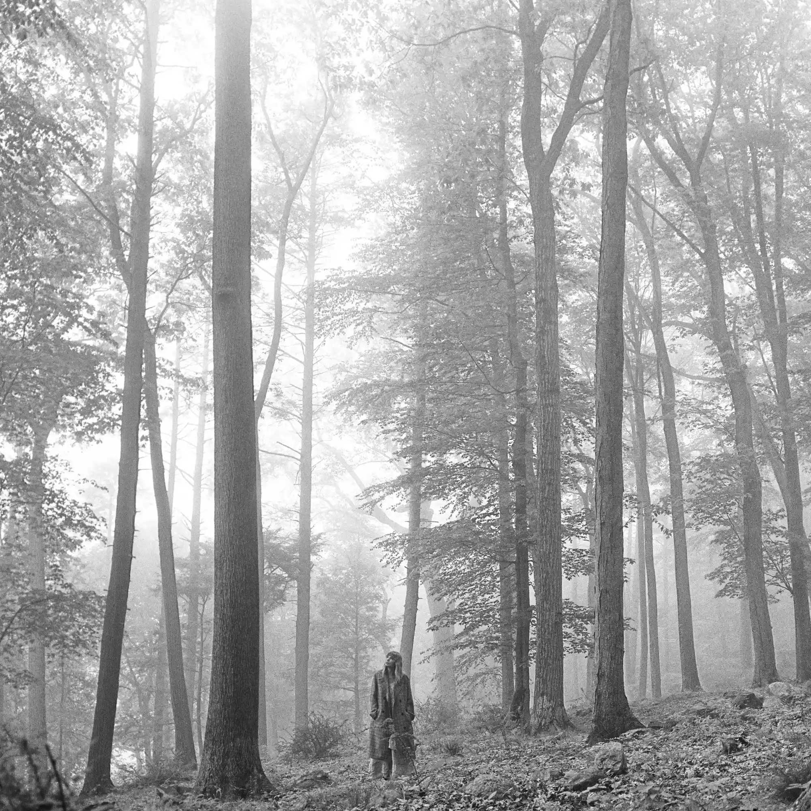
Lover is the bright, pastel intermission. Then the pandemic happens, and Swift does something genuinely surprising: a spare, literary, indie-folk record with Aaron Dessner, announced Thursday and released Friday. It becomes one of the most critically acclaimed releases of her career. She does it again two months later.
In retrospect, Lover is the last album she makes with full commercial intentionality before letting go of the formula entirely. Bright, joyful, slightly overstuffed. The last thing that sounds like the old rules.
Spare, literary, radically unlike anything on pop radio. folklore wins Album of the Year — making Swift the first artist to win three times. Critics who spent years dismissing her offer apologies in print.
Two months after folklore. Same collaborators, darker, more autumnal. The back-to-back stuns the industry — no major artist releases albums four months apart. She doesn't ask permission. She is the permission.
The first re-recording lands and Swifties immediately treat it as canonical. Streaming charts shift toward the new versions. The strategy is working: the originals are slowly losing their commercial value. One album at a time.
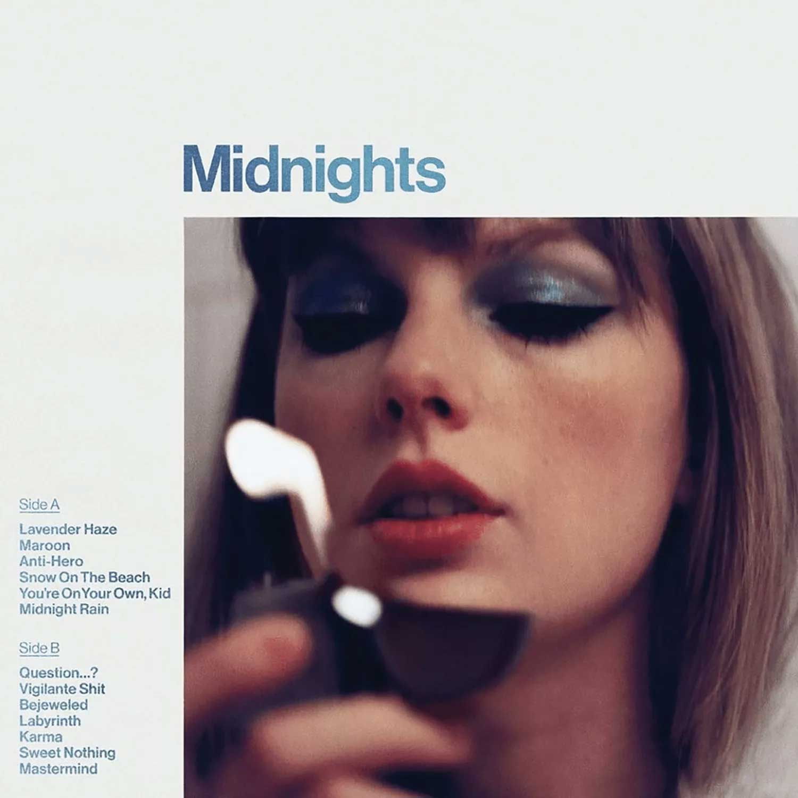
Midnights breaks Spotify streaming records on release day. Then the Eras Tour begins — three hours, 44 songs, every era — and becomes the first concert tour to gross over two billion dollars. Cities report economic boosts in the hundreds of millions when she arrives. She is no longer just an artist.
Midnights smashes Spotify's first-day streaming record within hours. It occupies the entire top 10 of the Hot 100 simultaneously — a feat never accomplished before. Ten slots. Her ten songs. Nobody else, ever.
The first concert tour to gross over two billion dollars. Cities lobby to be included. The Federal Reserve mentions her in economic reports. When she performs in Edinburgh, seismographs register a minor earthquake.
She bypasses traditional studio distribution and negotiates directly with AMC, Regal, and Cinemark. The concert film grosses $260 million globally. She keeps a significantly larger share than any normal studio deal. She is now also a distribution model.
The Tortured Poets Department drops as a double album with 31 tracks. She is now four-time Album of the Year winner. No solo artist in Grammy history has won four times. The question is no longer whether she's the greatest. It's what comes next.
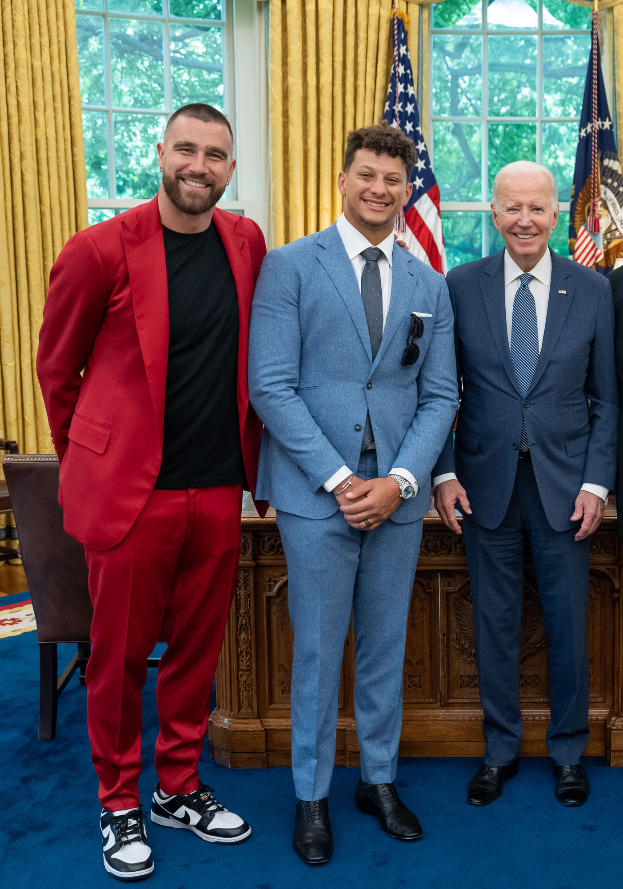
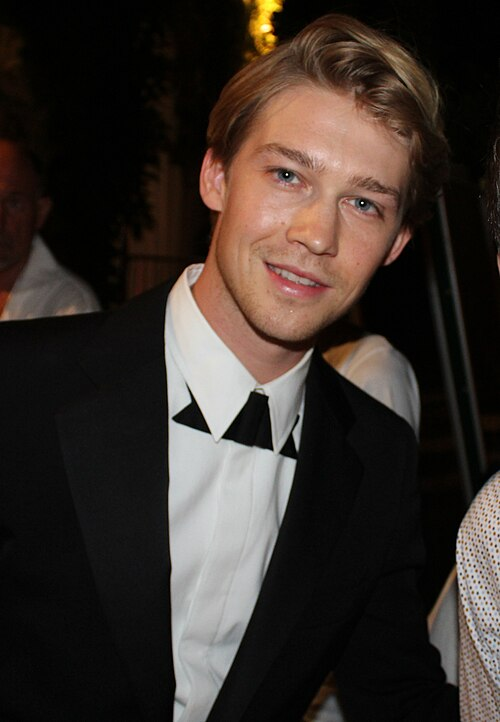
The music industry spent years reducing Taylor Swift to her relationships. She responded by making her relationships the most commercially successful subject matter in modern pop history. The men came and went. The albums stayed. All Too Well alone outlasted every one of them.
Jonas broke up with her by phone in 27 seconds. She said so on The Today Show. She was 18. The interview went viral before viral was a thing. Forever & Always was written in 25 minutes while her hands shook. She'd always be faster than them.
He was 29. She was 20. The relationship lasted three months. The song it produced — All Too Well — is 10 minutes long and is quietly one of the greatest breakup songs ever written. Gyllenhaal spent a decade pretending it wasn't about him. Then it went to #1 and he didn't have to.
The most photographed relationship of her career to that point. Style, Out of the Woods, Clean — half of 1989 is the anatomy of this relationship. Styles was gracious about it. The album sold 1.287 million copies its first week.
Six years. The longest relationship of her public life. Conducted almost entirely in private. It produced folklore, evermore, and portions of Midnights — her three most critically acclaimed records. When it ended in 2023, TTPD followed immediately. She was always going to write about it.
When Swift started attending Kansas City Chiefs games in fall 2023, NFL viewership among women aged 18–49 jumped 24%. The league noticed. The economists noticed. The Federal Reserve noticed. Kelce is the first boyfriend who generated his own economic data.
For twenty years, critics framed her relationships as the story. She made the music the story instead. Every breakup became a record. Every record outlasted the relationship. The narrative about her love life is ultimately a narrative about her output. She won that argument.
Every major conflict in Taylor Swift's career followed the same arc: someone underestimated her, overplayed their hand, or thought the news cycle would bury her. None of them were right. She is, at this point, empirically undefeatable in a long-running public dispute.
He took her microphone. She took notes. The feud would run for seven years, escalate through a phone call leak, produce reputation, and ultimately resolve — or not — in ways that continue to define both of their public narratives. She never directly lost a round.
Kardashian released footage from a phone call between Swift and Kanye. "Taylor Swift is over party" trended globally. She disappeared for a year. Then returned as something different. reputation sold over a million copies its first week. The party ended on her terms.
The most consequential dispute of her career. Braun bought her masters without warning. She declared war publicly and methodically. Six re-recordings later, the original masters have diminished commercial value. She didn't sue. She made the music.
Nine years after the relationship ended, the full 10-minute version of All Too Well premiered. Gyllenhaal was the subject of sustained public scrutiny. He gave one interview about it. The song went to #1. She said nothing. She didn't need to.
When the Eras Tour presale crashed Ticketmaster's systems in 2022, Congress called hearings. Swift didn't testify, but her fans did. The resulting antitrust scrutiny of Live Nation/Ticketmaster was directly attributed to the event. She broke a ticketing monopoly by accident.
Kanye: she outlasted him culturally and commercially. Kim: the phone call leaked; reputation sold a million copies. Braun: six re-recordings, originals losing value. The pattern is not that she's lucky. It's that she's patient, and she never stops working while you're busy winning the news cycle.
Spotify streams · approximate · 2025
Pick an era. Pick a mood. Get an original verse in her style — second-person address, confessional voice, the bridge that goes somewhere unexpected.
Original verse in Taylor Swift's lyrical style. Not her words — just inspired by them.
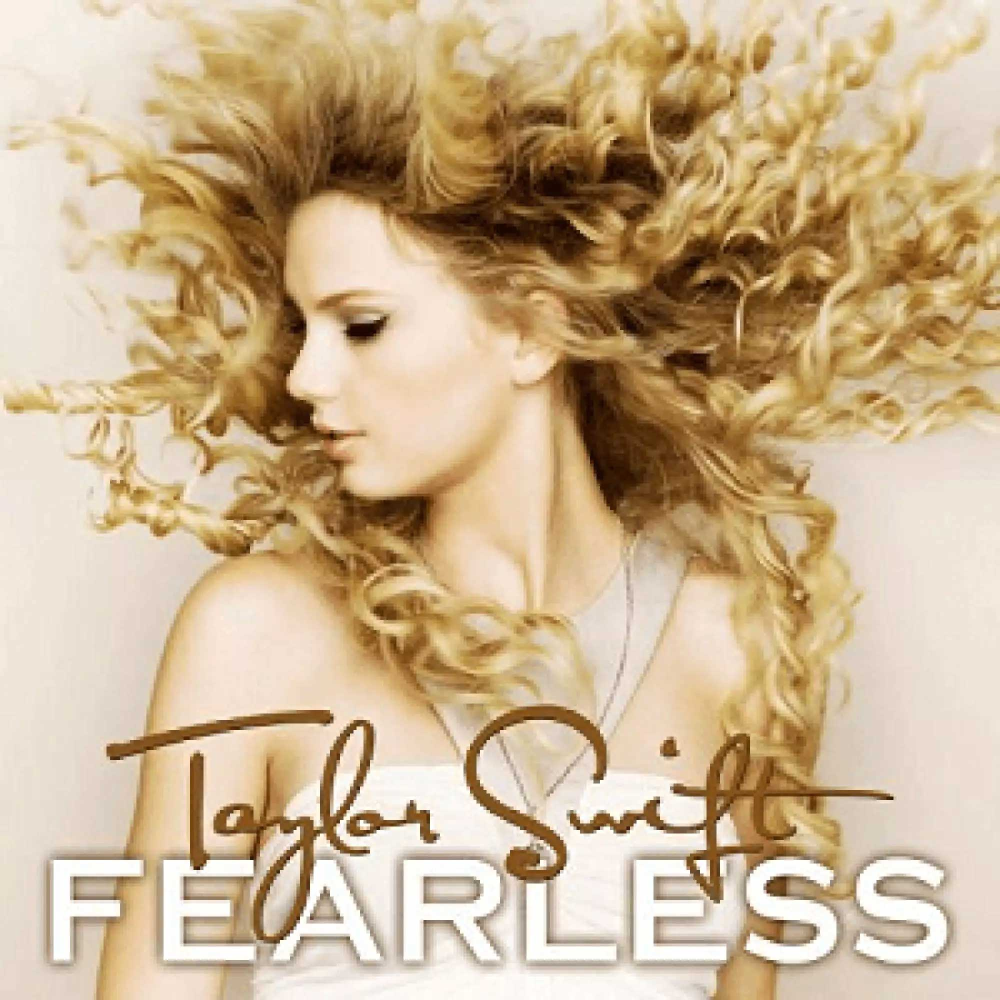
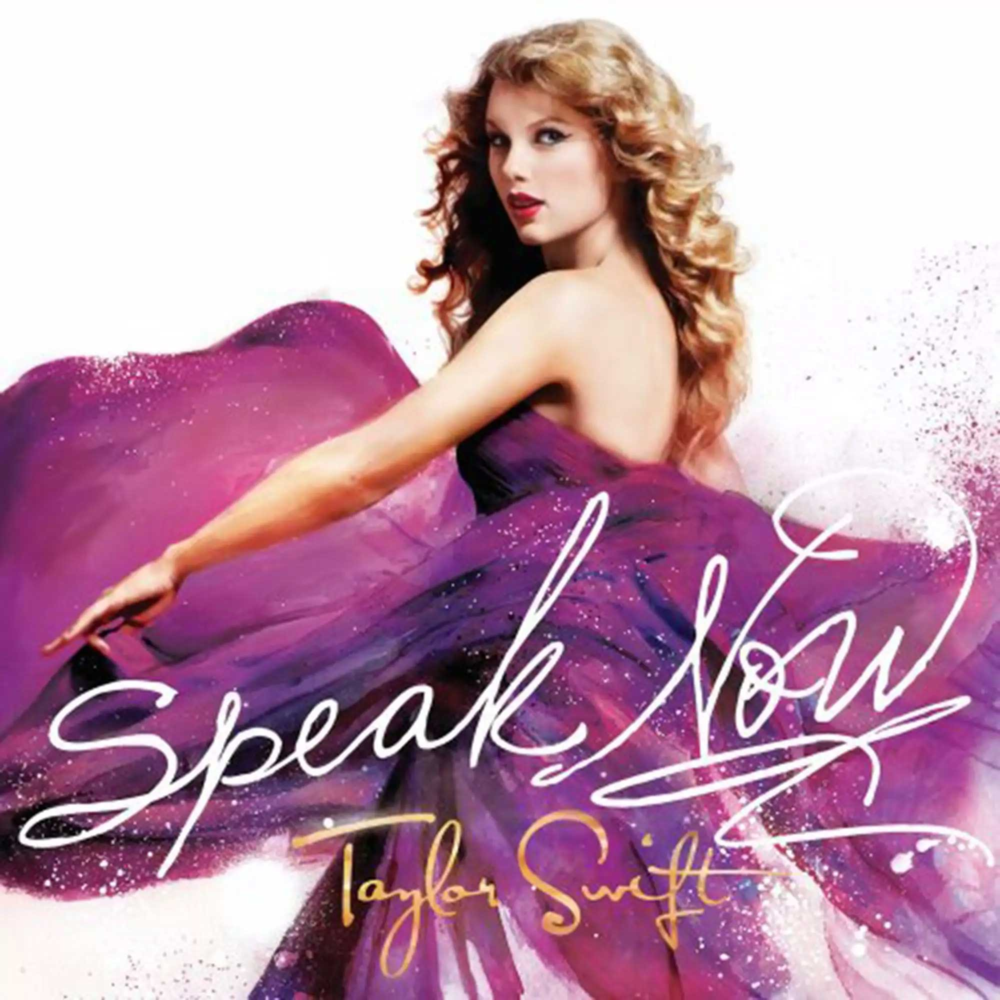
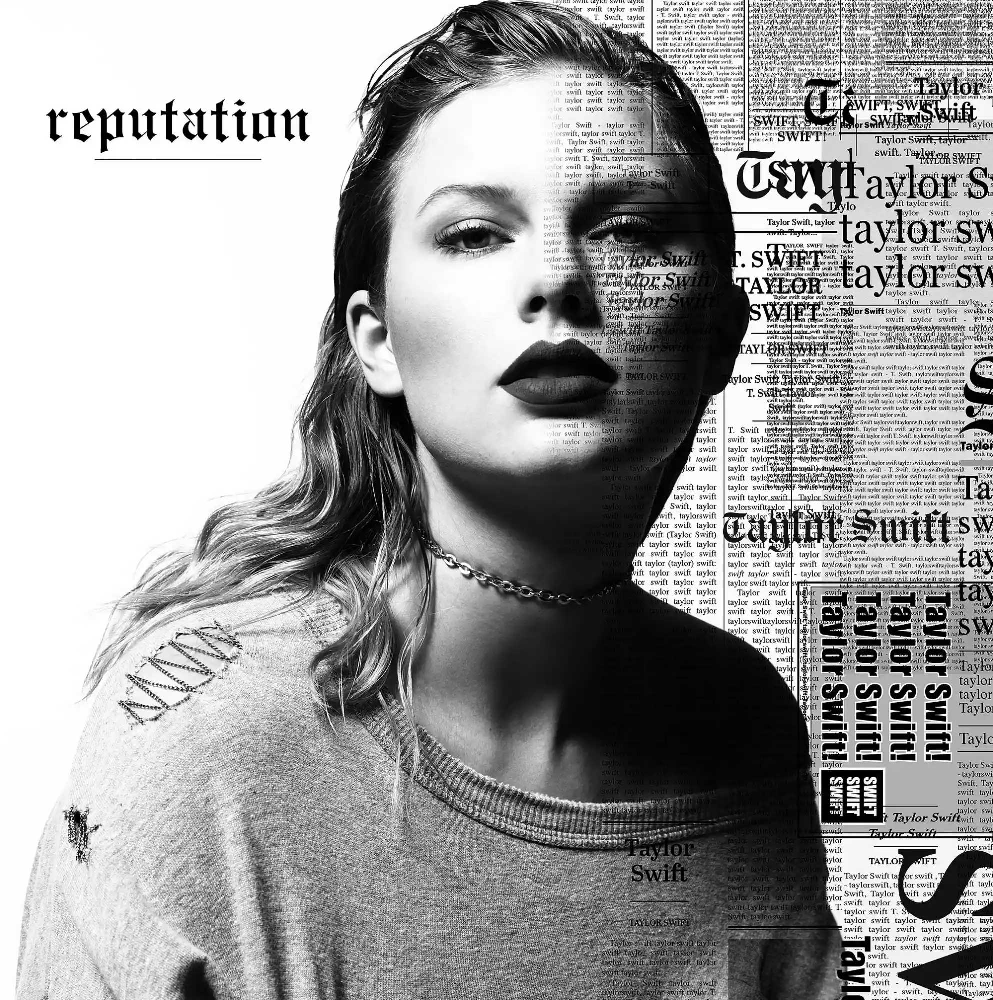
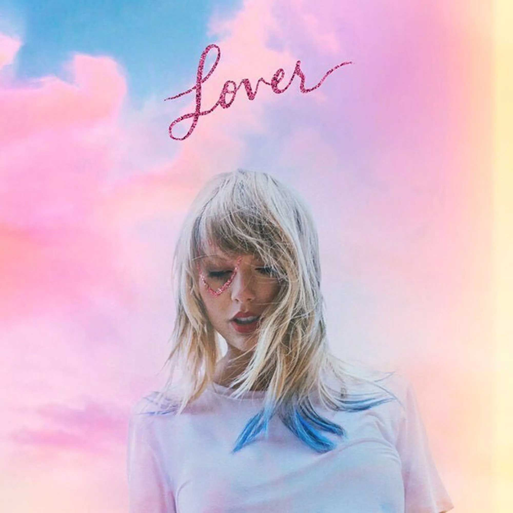
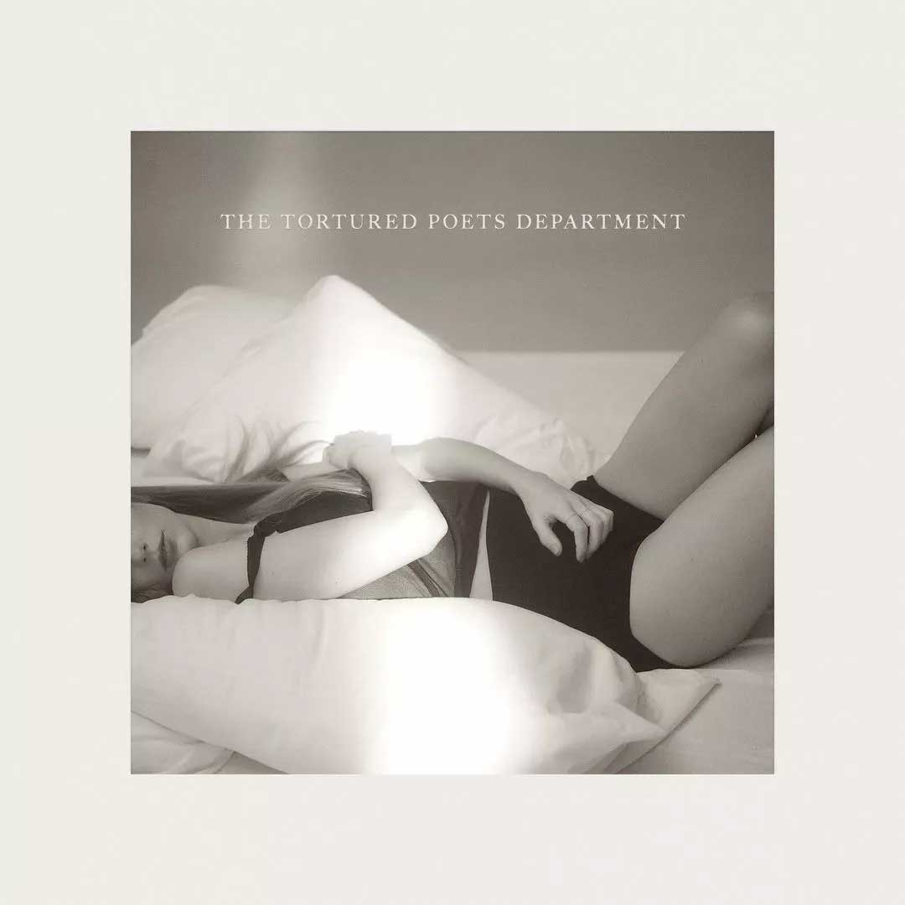
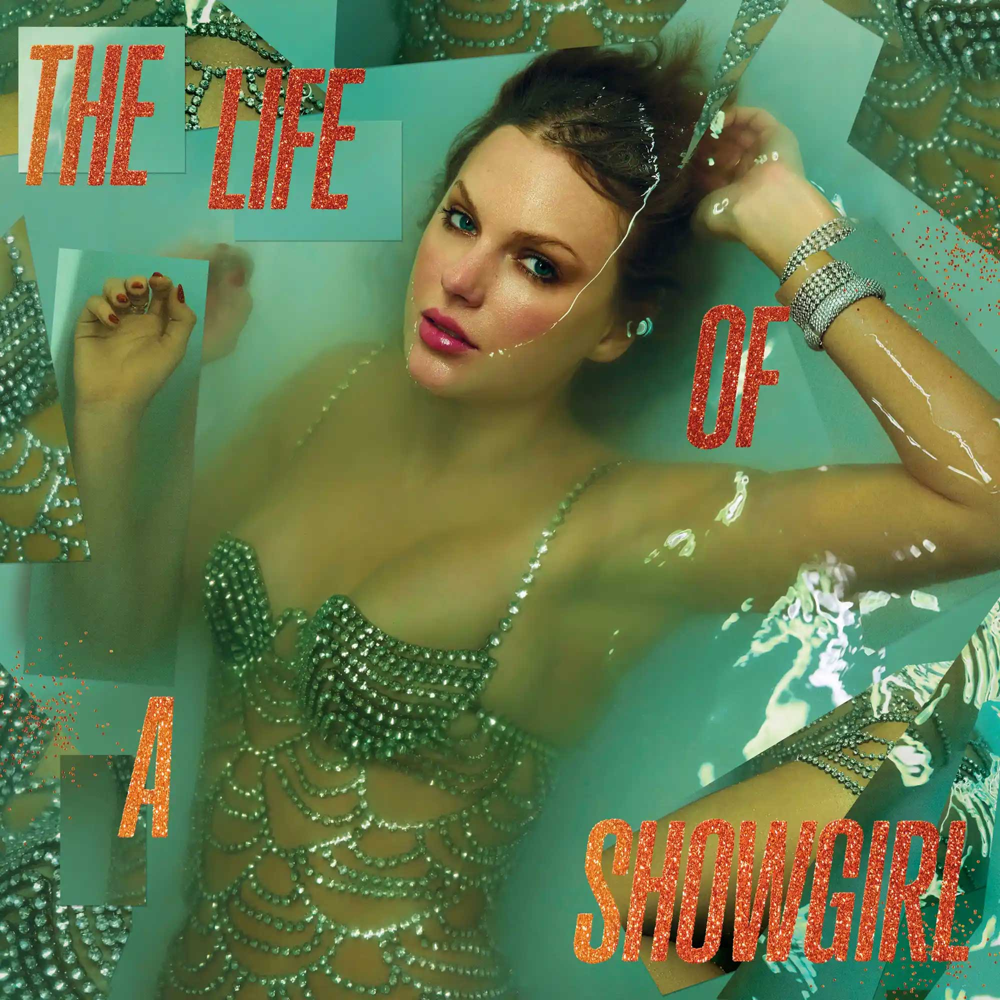
12 studio albums · 2006–2025 · Plus 6 Taylor's Version re-recordings
In 2019, Scooter Braun's company acquired Big Machine Records and with it, the masters to Taylor Swift's first six albums. She found out when the deal was announced publicly. Her response was not a lawsuit. It was a letter, a plan, and six years of work.
The plan: re-record every album she didn't own. Release them methodically. Make the originals commercially irrelevant by making the new versions better, and by making her fans understand exactly why it mattered. Swifties responded by treating Taylor's Version as canonical — refusing to stream the originals, advocating for the new versions in playlists and recommendations. It worked. The original masters began losing value almost immediately.
4 re-recordings followed: Fearless, Red, Speak Now, and 1989. Each one arrived with vault tracks — songs written during the original era that had never been released. The vault tracks became their own event. All Too Well (10 Minute Version) went to #1 on the Hot 100, making it the longest song ever to debut there.
Then, in 2023, via Shamrock Capital, she bought back her masters entirely.
“All of the music I've ever made… now belongs… to me.”
— Taylor Swift, in her letter to fans · 2023
From country teenager to the most commercially powerful force in the history of the music industry — the story of how Taylor Swift turned every betrayal into a catalog and every era into a religion.